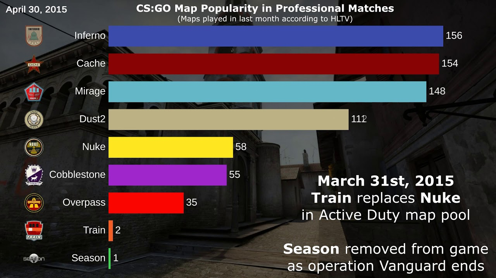

A HLTV hivatalosan bejegyzett mérkőzései alapján megtekinthetjük a CS:GO pályák népszerűségének változását 2012-től egészen 2019 végéig. Kezdetben Nuke vezetettet, ám 2012 decemberében Mirage átvette a stafétát, és azóta sem előzte meg egyik pálya sem!
Mirage népszerűségének csúcsa 2014 májusa, ugyanis ekkor több mint kétszer játszották többet ezt a pályát összesen, mint a második helyen lévő Inferno-t. 2015 decemberében csak annyi változást történt, hogy Dust 2 feljött a második helyre, míg Cache már a negyedik legjátszottabb pálya.
2017 januárjában az első hely még mindig változatlan, viszont Cache már a második legnépszerűbb pálya, mögötte Dust 2-vel és Inferno-val. 2018 júniusában Inferno ismét második helyen. 2019 januárjában pedig feliratkozik a listára Vertigo is. 2019 decemberében a horizontális oszlopdiagram úgy néz ki, hogy Mirage még mindig magasan vezet, de nem kétszer annyival, mint korábban. Utána Inferno, Train, Cache, Overpass, Nuke, Cobblestone, és végül Vertigo.
Fontos megjegyezni, hogy a helyezések alakulását nagyban befolyásolta, hogy a Valve több pályát is átalakított az évek során, amiket így nem lehetett játszani egy darabig.
Dust2-ről mindenki tudja, hogy szinte a játék legeleje óta szerepel a mapok között, és örök kedvenc minden évben. Azt viszont már kevesen tudják, hogy Dust2-n annyi ember játszott már, hogy a pálya több Guinness rekordot is tart.